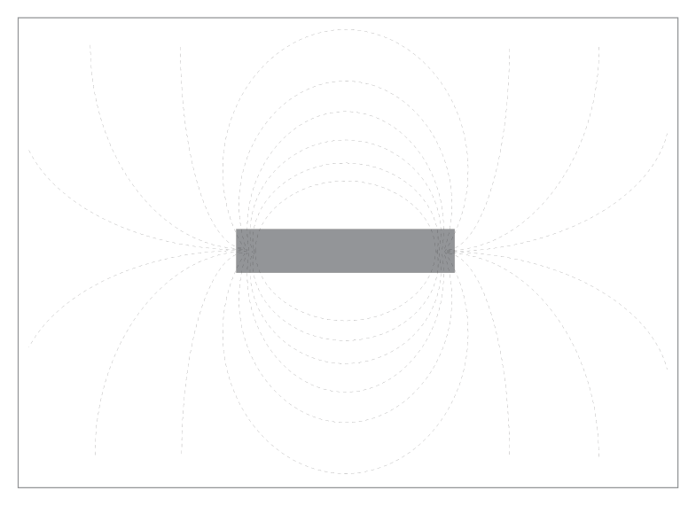
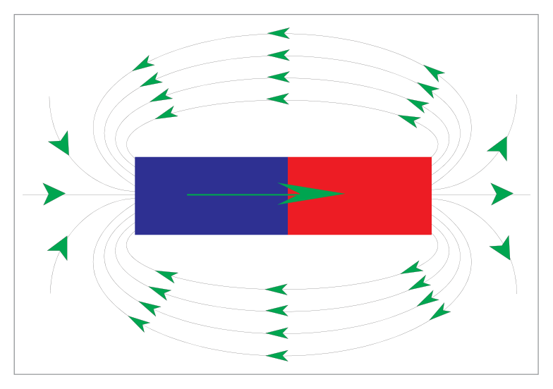
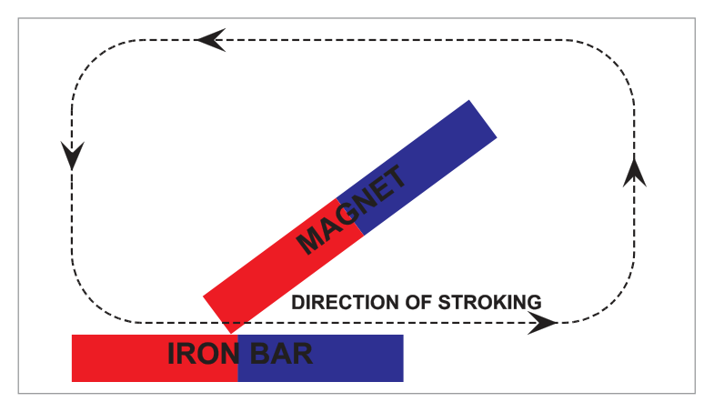
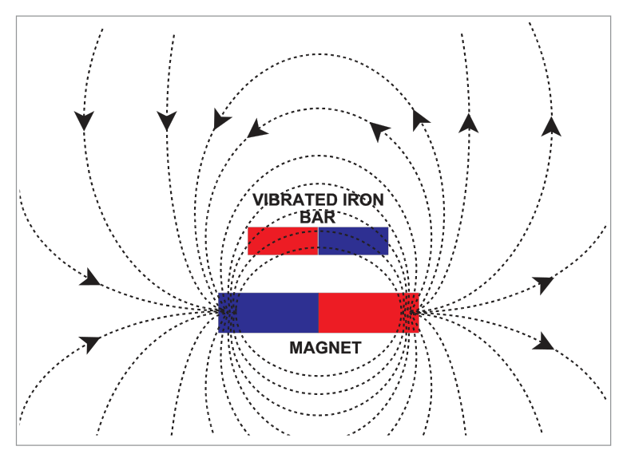
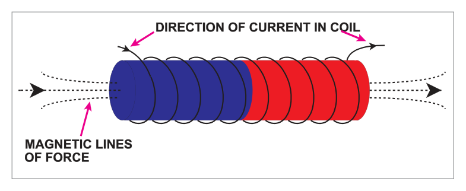
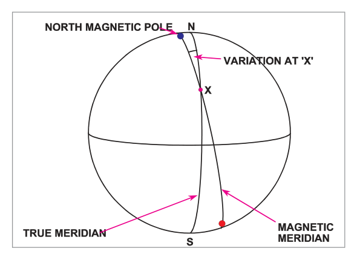
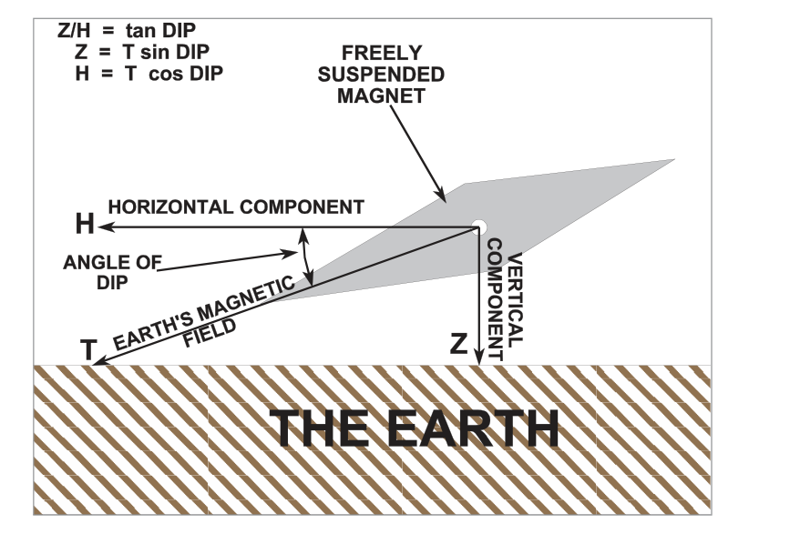
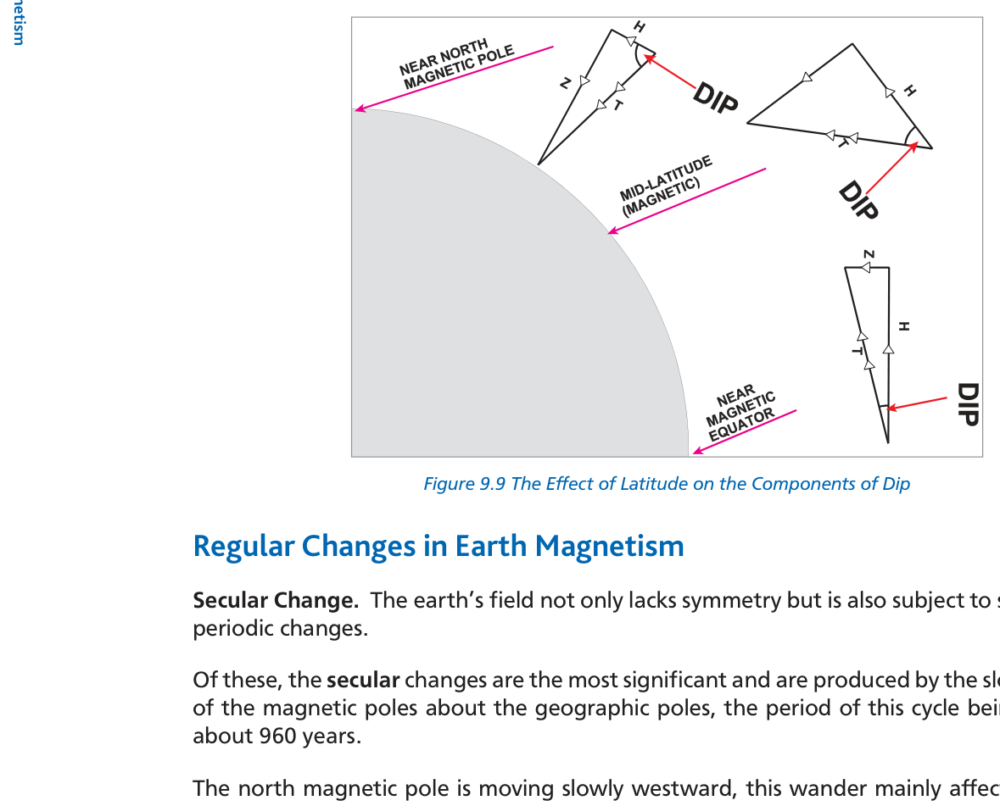

What this section covers: Basic definitions of magnetism and the concept of a magnetic field.
Magnetite — an oxide of iron — has been known for thousands of years for two properties: attracting small pieces of iron, and aligning north-south when freely suspended (the basis of the primitive compass). Modern magnets are made from ferrous metals and alloys that can be given these same properties.
The magnetic field of a magnet is the space around it in which its magnetic influence is felt. Field lines (traced by iron filings on card) converge towards small areas near the ends of the magnet — the poles.
Key Fact: A unit (single) pole cannot exist. If a magnet is cut in two, each piece becomes a complete magnet with two poles.

Fig. 9.1 – Magnetic field lines of a bar magnet — source p.105
2. Poles of a Magnet – Red and Blue Poles
What this section covers: Pole naming conventions and line-of-force direction.
A freely suspended magnet in the earth's field aligns roughly north-south:
Red pole (north-seeking pole): The end that points towards geographic north (towards the earth's magnetic north pole).
Blue pole (south-seeking pole): The opposite end.
By convention, magnetic lines of force are directed out from the red pole and back in to the blue pole.

Fig. 9.2 – Red and blue pole convention: lines out from red, into blue — source p.106
3. Attraction and Repulsion Rules
What this section covers: The fundamental rule governing magnetic interaction.
The Rule: Like poles REPEL each other (red-red, blue-blue) Unlike poles ATTRACT each other (red-blue)
4. Methods of Magnetization
What this section covers: The four ways magnetism can be induced in ferrous material.
4.1 Stroking
Repeatedly stroking the bar in the same direction with one end of a magnet. The end of the bar last touched by the red pole becomes a blue pole.

Fig. 9.3 – Magnetization by stroking — source p.107
4.2 Vibration or Hammering
Aligning the bar with the earth's field lines and subjecting it to vibration or hammering. Induced polarity creates continuity in the field-line pattern (lines into the blue pole, out of the red pole). This is the main cause of aircraft magnetism — agitation during manufacture in the earth's field.
Example: An aircraft built on a northerly heading in the earth's field acquires a permanent red pole in the nose and a blue pole in the tail.

Fig. 9.4 – Magnetization by vibrating/hammering: polarity maintains field continuity — source p.107
4.3 Placing in a Magnetic Field
Simply placing iron within a magnetic field induces polarity (especially for soft iron). Same polarity pattern as vibration method.
4.4 Solenoid (Electric Current) — Most Satisfactory
Placing the specimen inside a solenoid (cylindrical coil carrying DC). The concentrated field along the coil axis produces a high degree of magnetism. Note: magnetism induction is not unlimited — at a certain level the iron becomes magnetically saturated. Reversing current reverses the induced polarity.

Fig. 9.5 – Magnetization by solenoid — source p.108
5. Methods of Demagnetization
What this section covers: The three methods of removing magnetism from a magnetized component.
Method
Procedure
Note
Shock
Place bar at right angles to earth's field and hammer
The mechanical agitation disrupts domain alignment
Heat
Heat to approximately 900°C
Magnetism lost permanently — does not return on cooling
AC Electric Current
Place in solenoid with AC, gradually reduce amplitude to zero
Most effective method — alternating field reverses polarity repeatedly while reducing intensity to zero
Exam Tip: Demagnetization by AC current is the most effective method because it not only reverses polarity but also reduces intensity progressively to zero.
6. Magnetic and Non-Magnetic Materials – Hard and Soft Iron
What this section covers: Material classification and the hard/soft iron distinction — critical for understanding aircraft compass deviation.
6.1 Ferromagnetic vs. Non-Magnetic Materials
Ferromagnetic (magnetic): Iron, steel, and alloys (nickel, cobalt, chromium, tungsten). In an aircraft these may be magnetized and cause compass deviation.
Non-magnetic (non-ferrous): Aluminium, duralumin, brass, copper, plastic, paint — do not affect the compass.
6.2 Hard Iron vs. Soft Iron
Type
Metal Examples
Ease of Magnetization
Retention of Magnetism
Hard Iron
Cobalt steel, tungsten steel
Requires strong magnetizing field
Permanent — remains magnetized indefinitely after field removed
Soft Iron
Silicon iron, pure iron
Easy — weak field sufficient
Temporary (nil) — loses magnetism when field removed
Note: "Hard" and "soft" refer to magnetic characteristics, not physical hardness of the material. Some materials (sub-permanent) behave in between — they can be magnetized but lose this partly or wholly over time.
Aircraft Magnetism: Hard iron (permanent magnets in equipment) causes fixed compass deviation that depends on aircraft heading. Soft iron (aircraft structure) causes deviation that changes with the earth's field direction relative to the aircraft.
7. Terrestrial Magnetism
What this section covers: The earth as a magnet — its poles, their locations, and their movement.
The earth behaves as though a huge permanent magnet were situated near its centre, producing a field over its surface. The poles of this hypothetical earth-magnet do not coincide with the geographic (spin-axis) poles — this misalignment is the origin of magnetic variation.
Current Magnetic Pole Positions (2015 data):
North magnetic pole:86°N 153°W (north of Alaska)
South magnetic pole:64°S 136°E (south of Australia)
Magnetic poles are not stationary — moving at 6 to 25 NM per year
The north magnetic pole is moving faster than the south magnetic pole
What this section covers: Definition of variation, its naming convention, and its range.
A freely suspended magnet aligns with the magnetic meridian — the direction of the horizontal component of the earth's field at that point. The magnetic meridian generally differs from the true meridian (geographic north-south).
Magnetic Variation: The angle in the horizontal plane between the magnetic meridian and the true meridian at a point.
East variation (positive): Magnetic pole lies to the east of true north
West variation (negative): Magnetic pole lies to the west of true north
Range: 0° to 180°

Fig. 9.7 – Magnetic variation: angle between true north and magnetic north — source p.110
Exam Tip: Variation can reach 180° on the true meridian connecting the geographic and magnetic poles. This is a limit case — do not confuse variation (earth's field vs. true north) with deviation (compass error caused by aircraft magnetism).
9. Magnetic Dip
What this section covers: Definition of dip, its value at key locations, and its relationship to the magnetic equator.
Except near the magnetic equator (where field lines are parallel to the surface), a freely suspended magnet dips below horizontal towards the nearer magnetic pole:
North of magnetic equator: Red pole (north-seeking) dips lower
South of magnetic equator: Blue pole (south-seeking) dips lower
Dip Values at Key Locations:
Magnetic equator: Dip = 0° (lines of force horizontal)
United Kingdom: Dip ≈ 66°
Magnetic poles: Dip = 90° (magnet vertical)
The magnetic equator is the line joining all points where dip = 0°. It follows approximately within 10° of latitude of the geographic equator.

Fig. 9.8 – Resolution of earth's field T into horizontal (H) and vertical (Z) components — source p.111
10. Field Strength and Directive Force
What this section covers: How the total field T is resolved into H and Z, and why H matters for compass operation.
Resolution of total field T:
H = T × cos(dip angle) [horizontal component]
Z = T × sin(dip angle) [vertical component]
T² = H² + Z²
The horizontal component H is called the directive force — it is the component that aligns the compass needle with the magnetic meridian, providing the directional reference.
At the Magnetic Poles: Dip = 90° → H approaches zero → Z approaches T. The compass becomes useless because there is no horizontal component to align the magnet.
At the Magnetic Equator: Dip = 0° → H approaches T → Z approaches zero. Maximum directive force — compasses work best here.
As latitude increases from the equator towards the poles, dip increases and H decreases. The strength of H at 60° latitude is approximately half the value of H at the magnetic equator.

Fig. 9.9 – Effect of latitude on H (directive force) and Z (vertical component) — source p.112
graph LR
A["Increasing Latitude (towards poles)"] --> B["Dip increases"]
B --> C["H (directive force) DECREASES"]
B --> D["Z (vertical component) INCREASES"]
C --> E["Compass becomes less reliable"]
D --> F["Acceleration and turning errors INCREASE"]
Exam Tip: H = T cos(dip). At dip 0° (equator): H = T. At dip 90° (pole): H = 0. The directive force is greatest at the magnetic equator and zero at the poles.
11. Regular Changes in Earth Magnetism
What this section covers: The periodic changes in earth's magnetic field and their significance.
11.1 Secular Change (most significant)
The most significant regular change is secular change — caused by the slow movement of the magnetic poles about the geographic poles. The cycle period is approximately 960 years.
UK Example:
Westerly variation currently decreasing at 7 minutes per annum
Predicted variation in London in year 2240 = zero
Annual rate of change shown on navigation charts next to isogonals
11.2 Other Regular Changes (not navigationally significant)
Diurnal (daily) variation
Annual variation
11-year cycle — apparently related to the sunspot activity cycle
These regular changes (other than secular) are not of sufficient magnitude to affect normal navigation.
12. Unpredictable Changes in Earth Magnetism
What this section covers: Magnetic storms — their cause, duration, and operational significance.
Magnetic Storms:
Produced by unusually large sunspots
Occur at irregular intervals
Can last for up to three days
Main effect: temporary but significant change in magnetic variation
UK: alteration unlikely to exceed 2°
Arctic/Antarctic: change may exceed 5° and last up to 1 hour
Directive force H can also change — in high latitudes may fall below the minimum required for efficient compass operation
Quick Revision – Chapter 9:
Magnetic field lines: out from red pole, into blue pole. Unit poles cannot exist.
Like poles repel, unlike poles attract.
Magnetization methods: stroking, vibration/hammering (main cause of aircraft magnetism), magnetic field, solenoid (best).
Demagnetization: shock, heat (900°C), AC current (best).
Hard iron = permanent magnetism (cobalt/tungsten steel). Soft iron = temporary (pure/silicon iron).
Variation = angle between true and magnetic meridians (0° to 180°, E or W).
Dip = 0° at magnetic equator, 66° in UK, 90° at poles.
H = T cos(dip) — greatest at equator, zero at poles.
Secular change: ~960 year cycle. UK variation decreasing 7 min/year → zero in 2240.
Magnetic storms: caused by sunspots, last up to 3 days, up to 2° variation change in UK, up to 5° in polar regions.
Practice Questions & Detailed Answers
Questions 1–7 reproduced verbatim from Oxford Instrumentation Chapter 9. Answer key from source.
Q1.The red pole of a freely suspended magnet will point towards ....... and at latitude 60°N will point ....... at an angle known as the angle of ......
the nose of the aircraft, downwards, deviation
the North magnetic pole, downwards, variation
the nearest pole, downwards, declination
the North magnetic pole, downwards, dip
Correct Answer: (d) the North magnetic pole, downwards, dip
Explanation: The red (north-seeking) pole of a freely suspended magnet points towards the north magnetic pole. In the northern hemisphere (60°N), it also dips downwards below the horizontal, and the angle of this dip below horizontal is called the angle of dip. See Section 2 and Section 9.
Why the others are wrong:
(a) The nose of the aircraft is irrelevant — the magnet points to the north magnetic pole, independent of aircraft heading. "Deviation" is an error caused by aircraft magnetism.
(b) "Variation" is the angle between true north and magnetic north — not the name for the tilt angle of the magnet.
(c) "Declination" is an astronomical term occasionally used synonymously with variation — not the correct term for the tilt angle, which is "dip".
Instructor's Note: Three important angles: Variation (true vs. magnetic meridian), Deviation (magnetic meridian vs. compass needle due to aircraft magnetism), Dip (magnet axis vs. horizontal). Know which is which.
Q2.If the total force of the earth's field at a point is T and the horizontal and vertical components H and Z, the value of H is found by the formula:
H = T sin dip
H = Z tan dip
H = T cos dip
H = T tan dip
Correct Answer: (c) H = T cos dip
Explanation: H is the horizontal component of T. In the right triangle formed by T, H, and Z, H is adjacent to the dip angle → H = T × cos(dip). At dip 0° (equator): H = T. At dip 90° (pole): H = 0. See Section 10.
Why the others are wrong:
(a) H = T sin dip gives Z, not H (Z is opposite to the dip angle).
(b) H = Z tan dip is incorrect; Z = H tan dip is the correct rearrangement.
(d) H = T tan dip would give values greater than T when dip > 45°, which is impossible since H ≤ T.
Instructor's Note: H = T cos dip (H is the horizontal = adjacent = cos). Z = T sin dip (Z is vertical = opposite = sin). Draw the right triangle and label it.
Q3.The directive force of the earth's magnetic field:
varies with the heading of the aircraft
increases as the magnetic variation increases
increases as magnetic latitude increases
is greatest at the magnetic equator
Correct Answer: (d) is greatest at the magnetic equator
Explanation: At the magnetic equator, dip = 0° → H = T cos 0° = T (maximum). As latitude increases towards the poles, dip increases → H decreases. Directive force H is maximum at the equator and zero at the poles. See Section 10.
Why the others are wrong:
(a) Directive force H is a property of the earth's field at a given location — it does not depend on aircraft heading.
(b) Magnetic variation and directive force are not directly related. Variation is the angle between true and magnetic north.
(c) As magnetic latitude increases, dip increases and H DECREASES — the opposite of this option.
Instructor's Note: Directive force (H) and dip are inversely related. More dip = less H = worse compass. Equator = best compass. Poles = useless compass.
Q4.The slow change in the earth's magnetic variation is known as the ....... change and is caused by ......
annual, westerly movement of the magnetic pole
diurnal, easterly movement of the magnetic pole
secular, westerly movement of the magnetic pole
annual, sunspot activity
Correct Answer: (c) secular, westerly movement of the magnetic pole
Explanation: The most significant regular change in earth magnetism is the secular change, caused by the slow (approximately 960-year cycle) westerly movement of the north magnetic pole about the geographic pole. This is what causes the annual decrease in westerly variation in the UK. See Section 11.1.
Why the others are wrong:
(a) "Annual" is a periodic change but much smaller in magnitude — the secular change is the dominant long-term change.
(b) "Diurnal" means daily — a very small change unrelated to the main secular drift.
(d) Sunspots cause magnetic storms (unpredictable changes), not the slow secular change in variation.
Instructor's Note: Secular = slow, ~960 years, westerly pole movement. Sunspots = magnetic storms = unpredictable. These are the two main categories of change tested in DGCA.
Q5.Soft iron is comparatively ....... to magnetize whilst hard iron is ....... to demagnetize.
easy; difficult
easy; easy
difficult; easy
difficult; difficult
Correct Answer: (a) easy; difficult
Explanation: Soft iron is easy to magnetize (weak field sufficient) but also easy to demagnetize (loses magnetism when field removed — temporary). Hard iron is difficult to magnetize (requires strong field) and difficult to demagnetize (retains magnetism permanently). See Section 6.2.
Why the others are wrong:
(b) Hard iron is not easy to demagnetize — it requires special demagnetization treatment.
(c) Soft iron is not difficult to magnetize — that is the defining characteristic of hard iron.
(d) Incorrectly assigns hard-iron properties to soft iron for magnetization.
Instructor's Note: Remember: Soft = Easy in, Easy out (temporary). Hard = Hard in, Hard out (permanent). The words describe magnetic characteristics, not physical hardness.
Q6.Which of the following materials are classed as ferromagnetic:
Explanation: Ferromagnetic materials are iron and steel alloys (iron alloyed with cobalt, nickel, chromium, tungsten, carbon). Cobalt steel and chromium steel are both iron-based alloys and are ferromagnetic. See Section 6.1.
Why the others are wrong:
(a) Carbon-fibre is not ferromagnetic — it does not affect compasses.
(b) Nickel is ferromagnetic, but the source specifically lists the key ferromagnetic materials as iron, steel, and its alloys with cobalt/chromium/nickel/tungsten — option (d) is the more complete and precise answer from the source text.
(c) Copper is explicitly listed as non-magnetic (non-ferrous) in the source text.
Instructor's Note: Non-magnetic materials (don't affect compass): aluminium, duralumin, brass, copper, plastic, paint. Ferromagnetic: iron, steel and its alloys with Co, Ni, Cr, W, C.
Q7.The magnetic moment of a magnet:
is the product of pole strength and effective length
varies inversely as the square of the distance between the poles
varies directly as the square of the distance between the poles
decreases as the magnet length increases
Correct Answer: (a) is the product of pole strength and effective length
Explanation: Magnetic moment (M) = pole strength (m) × effective length (l). This is the fundamental definition. A magnet with greater pole strength and/or greater effective length has a higher magnetic moment and therefore greater ability to align itself with an external field (greater sensitivity). See Section 1 and associated magnetism theory.
Why the others are wrong:
(b) & (c) Magnetic moment is not a function of distance between poles in this way — these describe field strength variations at a distance from a pole (inverse square law), not the moment itself.
(d) Magnetic moment increases with length, not decreases — more length = larger effective arm = greater moment.
Instructor's Note: Magnetic Moment = Pole Strength × Effective Length. In compass design, increasing the magnetic moment (stronger magnets or longer effective length) increases sensitivity.
Master Reference Tables
Parameter
Value
Note
Section
Dip at magnetic equator
0°
Field lines horizontal; H = T
§9
Dip in United Kingdom
~66°
Significant compass errors in UK
§9
Dip at magnetic poles
90°
Compass useless; H = 0
§9
Magnetic equator latitude range
Within ~10° of geographic equator
Line of zero dip
§9
H at 60° latitude
~½ of H at magnetic equator
Significant reduction in directive force
§10
H formula
H = T cos(dip)
Z = T sin(dip)
§10
Secular change period
~960 years
Westerly movement of N magnetic pole
§11
UK variation change rate
7 min/year decreasing
Predicted zero in 2240
§11
N magnetic pole (2015)
86°N 153°W
North of Alaska
§7
S magnetic pole (2015)
64°S 136°E
South of Australia
§7
Pole movement rate
6–25 NM/year
N pole moves faster
§7
Magnetic storm duration
Up to 3 days
Caused by sunspots
§12
Variation change in storm (UK)
Up to 2°
§12
Variation change in storm (polar)
May exceed 5°, up to 1 hour
§12
Demagnetization by heat
~900°C
Permanent loss of magnetism
§5
KEY FORMULAS:
H = T × cos(dip angle) [directive force / horizontal component]
Z = T × sin(dip angle) [vertical component]
T² = H² + Z² [total field]
Magnetic Moment = Pole Strength × Effective Length
Mnemonics:
Pole colours: "Red = North-seeking (Red → North as in Red letter day = special/N)". Blue = south.
H and dip: "H is Horizontal = H-orizontal = cos (adjacent side)". Z is vertical = sin (opposite).
Soft vs Hard iron: "Soft = Soft on magnetism (in and out easily). Hard = Hard to move (permanent)."
Secular change cause: "S for Secular, S for Slow, S for Shift of magnetic pole."
Magnetic storms: "Sun Spots = Storms" (unpredictable, up to 3 days).